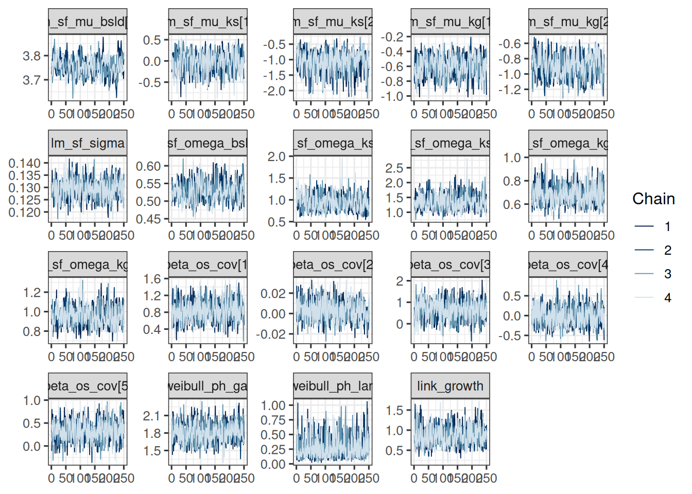
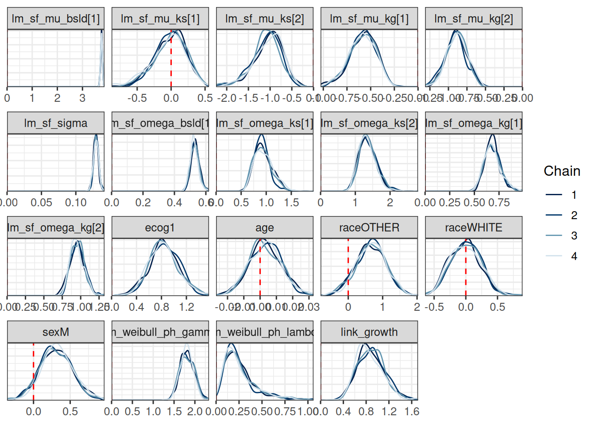
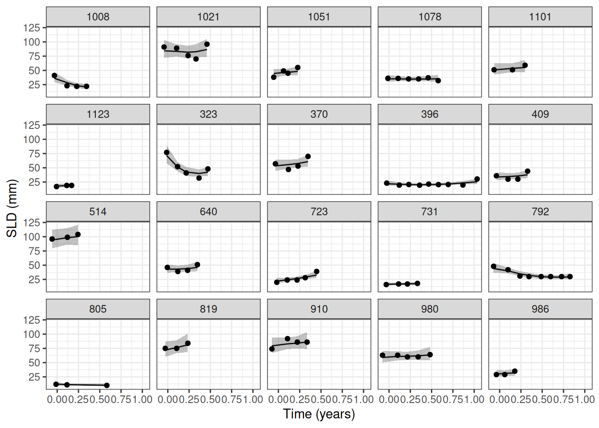
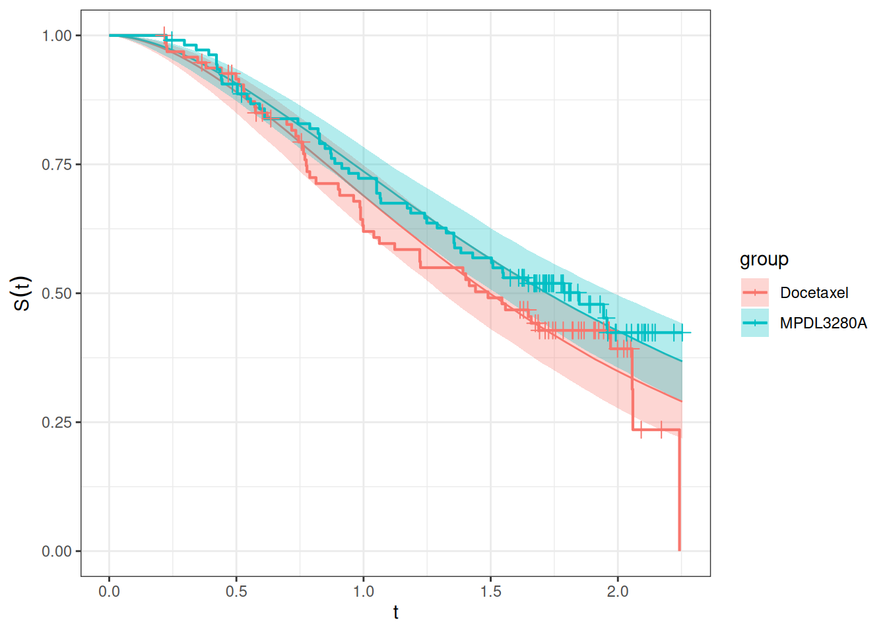
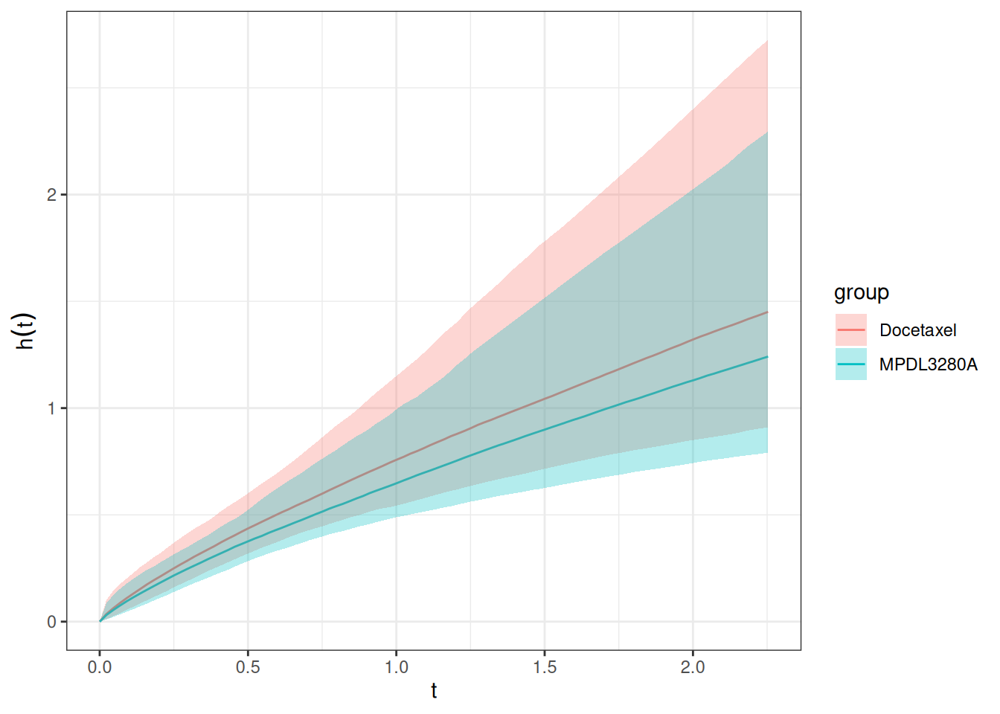
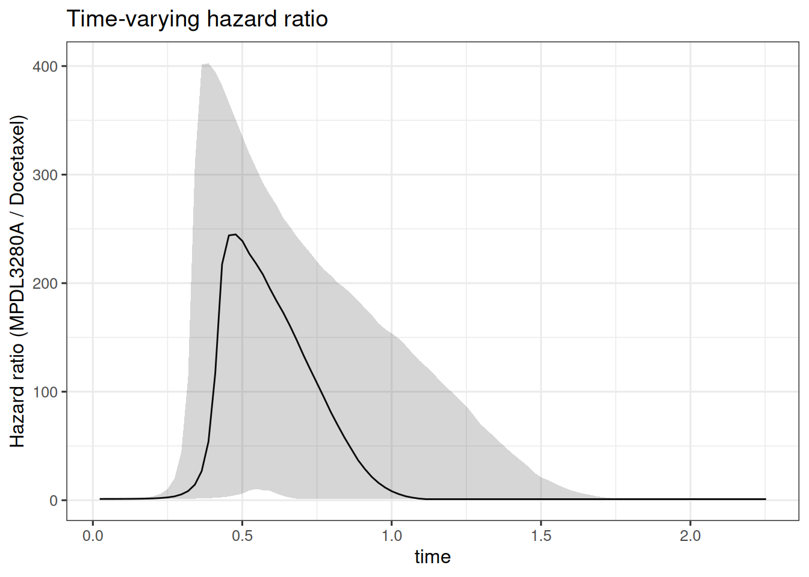
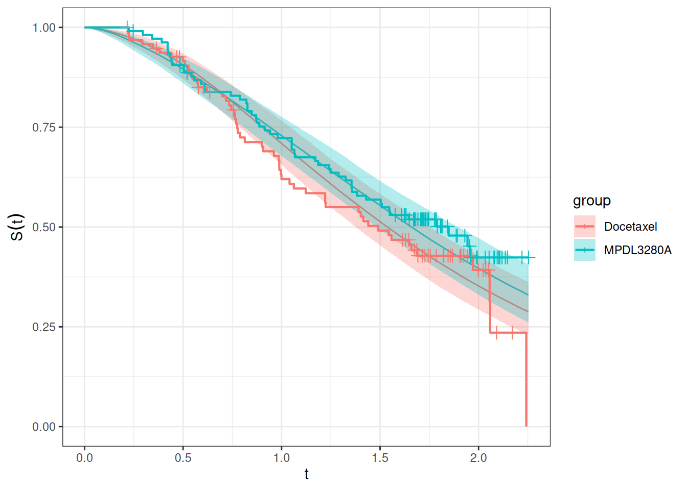
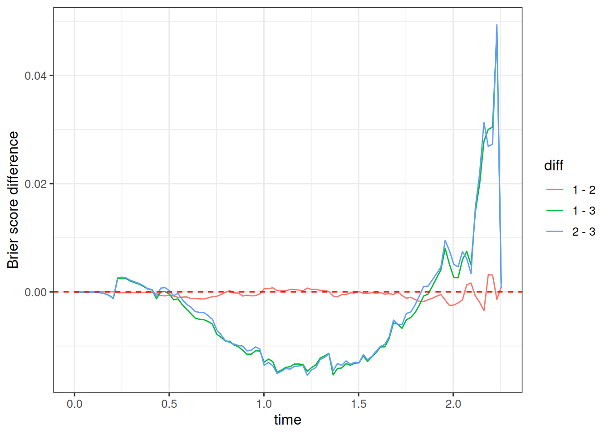

Show the code
subj_df <- os_data |>
mutate(study = "OAK") |>
select(study, id, arm)
subj_data <- DataSubject(
data = subj_df,
subject = "id",
arm = "arm",
study = "study"
)jmpostThe purpose of this document is to show a minimal workflow for fitting a joint Stein-Fojo TGI + Weibull OS model using the jmpost package.
Here we execute the R code from the setup and data preparation chapter, see the full code here.
First we again prepare the data objects, starting with the subject level data:
subj_df <- os_data |>
mutate(study = "OAK") |>
select(study, id, arm)
subj_data <- DataSubject(
data = subj_df,
subject = "id",
arm = "arm",
study = "study"
)Next we prepare the longitudinal data object.
long_df <- tumor_data |>
select(id, year, sld)
long_data <- DataLongitudinal(
data = long_df,
formula = sld ~ year
)Next we prepare the DataSurvival object, where specify the covariates for the survival model:
surv_data <- DataSurvival(
data = os_data,
formula = Surv(os_time, os_event) ~ ecog + age + race + sex
)Note that we don’t include the log growth rate estimate log_kg_est here, because here we are fitting a joint model - the log growth rate will be included later in the JointModel specification instead. For now we also don’t include the treatment arm covariate, because we assume Working Assumption (1) from the previous session, i.e. the treatment effect is fully captured by the mediator (or link).
Now we can create the JointData object for the TGI model:
joint_data <- DataJoint(
subject = subj_data,
longitudinal = long_data,
survival = surv_data
)We specify the Stein-Fojo model for the TGI data, the Weibull model for the OS data, as well as the link, i.e. the log growth rate from the TGI model which shall influence the hazard in the OS model:
joint_mod <- JointModel(
longitudinal = LongitudinalSteinFojo(
mu_bsld = prior_normal(log(65), 1),
mu_ks = prior_normal(log(0.52), 1),
mu_kg = prior_normal(log(1.04), 1),
omega_bsld = prior_normal(0, 3) |> set_limits(0, Inf),
omega_ks = prior_normal(0, 3) |> set_limits(0, Inf),
omega_kg = prior_normal(0, 3) |> set_limits(0, Inf),
sigma = prior_normal(0, 3) |> set_limits(0, Inf)
),
survival = SurvivalWeibullPH(
lambda = prior_gamma(0.7, 1),
gamma = prior_gamma(1.5, 1),
beta = prior_normal(0, 20)
),
link = linkGrowth(
prior = prior_normal(0, 20)
)
)Here we use a normal prior with mean 0 and standard deviation 20 for the link coefficient, which is a very uninformative prior. This corresponds to the same prior used for the regression coefficients of the “fixed” covariates in SurvivalWeibullPH.
For the other parameters, we keep the same prior as in the previous sessions on separate TGI and OS models.
Again we need to be careful with the automatic selection of initial values due to the large standard deviation on beta and the link coefficient. We therefore set the shrinkage option and check the initial values:
options("jmpost.prior_shrinkage" = 0.99)
initialValues(joint_mod, n_chains = CHAINS)[[1]]
[[1]]$lm_sf_mu_bsld
[1] 4.186408
[[1]]$lm_sf_mu_ks
[1] -0.6533404
[[1]]$lm_sf_mu_kg
[1] 0.04399251
[[1]]$lm_sf_omega_bsld
[1] 0.02535341
[[1]]$lm_sf_omega_ks
[1] 0.03761227
[[1]]$lm_sf_omega_kg
[1] 0.03362627
[[1]]$lm_sf_sigma
[1] 0.04362442
[[1]]$lm_sf_eta_tilde_bsld
[1] -0.01324796
[[1]]$lm_sf_eta_tilde_ks
[1] 0.00906113
[[1]]$lm_sf_eta_tilde_kg
[1] -0.002481752
[[1]]$sm_weibull_ph_lambda
[1] 0.6960197
[[1]]$sm_weibull_ph_gamma
[1] 1.503405
[[1]]$beta_os_cov
[1] -0.1592716
[[1]]$link_growth
[1] 0.2964096
[[2]]
[[2]]$lm_sf_mu_bsld
[1] 4.168828
[[2]]$lm_sf_mu_ks
[1] -0.6392827
[[2]]$lm_sf_mu_kg
[1] 0.03856231
[[2]]$lm_sf_omega_bsld
[1] 0.07861638
[[2]]$lm_sf_omega_ks
[1] 0.003982579
[[2]]$lm_sf_omega_kg
[1] 0.05386789
[[2]]$lm_sf_sigma
[1] 0.03085035
[[2]]$lm_sf_eta_tilde_bsld
[1] -0.006505089
[[2]]$lm_sf_eta_tilde_ks
[1] -0.01236072
[[2]]$lm_sf_eta_tilde_kg
[1] 0.008914375
[[2]]$sm_weibull_ph_lambda
[1] 0.6980224
[[2]]$sm_weibull_ph_gamma
[1] 1.485699
[[2]]$beta_os_cov
[1] 0.1003709
[[2]]$link_growth
[1] 0.02581392
[[3]]
[[3]]$lm_sf_mu_bsld
[1] 4.165599
[[3]]$lm_sf_mu_ks
[1] -0.6531346
[[3]]$lm_sf_mu_kg
[1] 0.05062907
[[3]]$lm_sf_omega_bsld
[1] 0.007544333
[[3]]$lm_sf_omega_ks
[1] 0.01124155
[[3]]$lm_sf_omega_kg
[1] 0.003390755
[[3]]$lm_sf_sigma
[1] 0.002201777
[[3]]$lm_sf_eta_tilde_bsld
[1] -0.009876854
[[3]]$lm_sf_eta_tilde_ks
[1] 0.0173306
[[3]]$lm_sf_eta_tilde_kg
[1] 0.01522422
[[3]]$sm_weibull_ph_lambda
[1] 0.6931406
[[3]]$sm_weibull_ph_gamma
[1] 1.512414
[[3]]$beta_os_cov
[1] -0.09676809
[[3]]$link_growth
[1] 0.05786873
[[4]]
[[4]]$lm_sf_mu_bsld
[1] 4.16451
[[4]]$lm_sf_mu_ks
[1] -0.6594921
[[4]]$lm_sf_mu_kg
[1] 0.0546627
[[4]]$lm_sf_omega_bsld
[1] 0.04598753
[[4]]$lm_sf_omega_ks
[1] 0.03105667
[[4]]$lm_sf_omega_kg
[1] 0.009463023
[[4]]$lm_sf_sigma
[1] 0.008416699
[[4]]$lm_sf_eta_tilde_bsld
[1] 0.009494352
[[4]]$lm_sf_eta_tilde_ks
[1] -0.003877261
[[4]]$lm_sf_eta_tilde_kg
[1] -0.007049528
[[4]]$sm_weibull_ph_lambda
[1] 0.6934188
[[4]]$sm_weibull_ph_gamma
[1] 1.508448
[[4]]$beta_os_cov
[1] -0.155212
[[4]]$link_growth
[1] -0.1956722If we don’t do this, then it is very likely that some chains will diverge because of very unrealistic initial values for beta and/or the link coefficient.
Now we can fit the model:
save_file <- here("session-jm/jm1.rds")
if (file.exists(save_file)) {
joint_results <- readRDS(save_file)
} else {
joint_results <- sampleStanModel(
joint_mod,
data = joint_data,
iter_sampling = ITER,
iter_warmup = WARMUP,
chains = CHAINS,
parallel_chains = CHAINS,
thin = CHAINS,
seed = BAYES.SEED,
refresh = REFRESH
)
saveObject(joint_results, file = save_file)
}As mentioned before, also here we can get warnings at the beginning of the chains’ sampling process (“The current Metropolis proposal is about to be rejected …”). As long as this only happens in the beginning, and not during the sampling later, then this is not a cause for concern.
We note that the MCMC sampling process takes much longer here (about factor 10 more) compared to just fitting the TGI or the OS data separately. This is due to the more complex likelihood function calculations for the joint TGI-OS model.
Let’s check the convergence of the population parameters. If we don’t remember their names, we can query them as follows:
joint_results
JointModelSamples Object with:
# of samples per chain = 1000
# of chains = 4
Variables:
beta_os_cov[5]
link_coefficients
link_function_inputs[203, 3]
link_growth
lm_sf_eta_tilde_bsld[203]
lm_sf_eta_tilde_kg[203]
lm_sf_eta_tilde_ks[203]
lm_sf_mu_bsld
lm_sf_mu_kg[2]
lm_sf_mu_ks[2]
lm_sf_omega_bsld
lm_sf_omega_kg[2]
lm_sf_omega_ks[2]
lm_sf_psi_bsld[203]
lm_sf_psi_kg[203]
lm_sf_psi_ks[203]
lm_sf_sigma
log_surv_fit_at_obs_times[203]
long_obvs_log_lik[1093]
lp__
os_cov_contribution[203]
os_subj_log_lik[203]
pars_os[2]
sm_weibull_ph_gamma
sm_weibull_ph_lambda
Ypred[1093] vars <- c(
"lm_sf_mu_bsld",
"lm_sf_mu_ks",
"lm_sf_mu_kg",
"lm_sf_sigma",
"lm_sf_omega_bsld",
"lm_sf_omega_ks",
"lm_sf_omega_kg",
"beta_os_cov",
"sm_weibull_ph_gamma",
"sm_weibull_ph_lambda",
"link_growth"
)
mcmc_joint_results <- cmdstanr::as.CmdStanMCMC(joint_results)
mcmc_joint_results$summary(vars)# A tibble: 19 × 10
variable mean median sd mad q5 q95 rhat ess_bulk
<chr> <dbl> <dbl> <dbl> <dbl> <dbl> <dbl> <dbl> <dbl>
1 lm_sf_mu_bs… 3.76 3.76 0.0371 0.0355 3.69 3.82 1.02 192.
2 lm_sf_mu_ks… -0.0188 0.00943 0.235 0.228 -0.445 0.339 1.00 462.
3 lm_sf_mu_ks… -1.06 -1.03 0.330 0.314 -1.66 -0.591 1.01 559.
4 lm_sf_mu_kg… -0.585 -0.576 0.139 0.146 -0.837 -0.375 0.999 500.
5 lm_sf_mu_kg… -0.892 -0.890 0.139 0.138 -1.14 -0.656 1.00 552.
6 lm_sf_sigma 0.129 0.129 0.00371 0.00366 0.123 0.135 1.00 840.
7 lm_sf_omega… 0.530 0.529 0.0265 0.0256 0.488 0.576 1.01 340.
8 lm_sf_omega… 0.936 0.913 0.178 0.169 0.680 1.27 1.01 409.
9 lm_sf_omega… 1.36 1.33 0.252 0.247 0.989 1.81 1.00 566.
10 lm_sf_omega… 0.684 0.677 0.0812 0.0744 0.561 0.831 1.00 781.
11 lm_sf_omega… 0.956 0.952 0.0953 0.0973 0.810 1.12 1.01 585.
12 beta_os_cov… 0.842 0.829 0.234 0.229 0.464 1.24 1.00 812.
13 beta_os_cov… 0.00316 0.00296 0.00981 0.00996 -0.0128 0.0197 0.998 975.
14 beta_os_cov… 0.658 0.656 0.431 0.428 -0.0678 1.36 1.00 901.
15 beta_os_cov… -0.00443 -0.00251 0.237 0.247 -0.371 0.371 1.00 760.
16 beta_os_cov… 0.313 0.305 0.215 0.217 -0.0363 0.677 1.00 735.
17 sm_weibull_… 1.81 1.81 0.167 0.170 1.55 2.09 1.00 794.
18 sm_weibull_… 0.261 0.213 0.176 0.132 0.0733 0.635 0.998 805.
19 link_growth 0.880 0.861 0.235 0.242 0.525 1.29 1.00 571.
# ℹ 1 more variable: ess_tail <dbl>draws_joint_results <- mcmc_joint_results$draws(vars)
mcmc_trace(draws_joint_results)
So this looks good.
In order to better see which of the survival model coefficients relate to which covariates, we can again rename them as follows:
os_cov_name_mapping <- function(surv_data) {
surv_data_design <- as_stan_list(surv_data)$os_cov_design
os_cov_names <- colnames(surv_data_design)
old_coef_names <- as.character(glue::glue("beta_os_cov[{seq_along(os_cov_names)}]"))
setNames(old_coef_names, os_cov_names)
}
os_cov_renaming <- os_cov_name_mapping(surv_data)
draws_joint_results <- do.call(
rename_variables,
c(list(draws_joint_results), os_cov_renaming)
)
mcmc_dens_overlay(draws_joint_results) +
geom_vline(xintercept = 0, linetype = "dashed", color = "red")
If we compare this with the covariate effect estimates from the 2-stage OS model we did in the last session, then we can see:
log_kg_est effect (see link_growth here) is stronger here, but also with larger uncertaintyecog effect is similar (clearly higher risk with ECOG 1)age effect is similar (no effect)race effect is similar (almost no effect)sex effect is similar (higher risk for males)It is also interesting to look at the shrinkage and growth rate estimates from the SF model part: We see e.g. 0 shrinkage in arm 1, which is the control arm, while we see a strong shrinkage in arm 2, which is the Atezo arm.
Let’s first check the fit of the Stein-Fojo model to the SLD data.
The first step is to generate the predictions at the subject level. We can do this using the LongitudinalQuantities() function, which takes the MCMC results and the grid at which the predictions should be made. Here we use the GridObserved() function, which takes the IDs of the subjects for which the predictions should be made. Since each patient has its own plot, we sample a small subset of patient IDs here as an example only. In a real application we could write a simple loop that then processes batches of patients in sequence.
set.seed(521)
pt_subset <- as.character(sample(subj_df$id, 20))
tgi_fit_pred <- LongitudinalQuantities(
joint_results,
grid = GridObserved(subjects = pt_subset)
)Note that here again a Stan program needs to be compiled, which can take some time (but only the first time, because the executable is cached). This is because we pass the posterior samples to a Stan program which then generates the quantities of interest, here the Stein-Fojo model fit for each patient at the observed time points.
Now we can plot the predictions:
autoplot(tgi_fit_pred) +
labs(x = "Time (years)", y = "SLD (mm)")
We can see that the model fits the data well, with the estimates Stein-Fojo model curves closely following the observed values.
Another useful plot displays the model predicted survival function and overlays the non-parametric Kaplan-Meier plot to it.
The first step consists in generating the survival predictions at the group level with the SurvivalQuantities() function. In order to do this, we use now the GridGrouped() function, which takes the time points at which the predictions should be made and the groups for which the predictions should be made (as a list containing the IDs in each element defining the group). This works the same way as in the previous session with the OS model.
time_grid <- seq(from = 0, to = max(os_data$os_time), length = 100)
os_surv_group_grid <- GridGrouped(
times = time_grid,
groups = with(
subj_df,
split(as.character(id), arm)
)
)
os_surv_pred <- SurvivalQuantities(
object = joint_results,
grid = os_surv_group_grid,
type = "surv"
)Now we can use the autoplot() method:
autoplot(os_surv_pred, add_km = TRUE, add_wrap = FALSE)
We can see that the fit looks adequate, with the modelled survival functions closely following the Kaplan-Meier curves in each treatment group. Of note, this fit looks better than in the 2-stage TGI-OS model from the previous session.
Similarly to the survival function estimation, we can also estimate the hazard function by treatment group.
os_hazard_pred <- SurvivalQuantities(
object = joint_results,
grid = os_surv_group_grid,
type = "haz"
)Also this can be plotted using the autoplot() method:
autoplot(os_hazard_pred, add_wrap = FALSE)
We can already see here that this looks slightly different than the same plot from the 2-step TGI-OS model:
Now let’s look at the estimated hazard ratio:
os_hr_est <- os_hazard_pred |>
as.data.frame() |>
group_by(group, time) |>
mutate(sample = row_number()) |>
pivot_wider(names_from = group, values_from = values) |>
mutate(hr = MPDL3280A / Docetaxel) |>
group_by(time) |>
summarize(
mean = mean(hr, na.rm = TRUE),
lower = quantile(hr, 0.05, na.rm = TRUE),
upper = quantile(hr, 0.95, na.rm = TRUE)
) |>
na.omit() # Omit the time = 0 which has NA
summary(os_hr_est) time mean lower upper
Min. :0.02276 Min. :0.8703 Min. :0.6966 Min. :1.063
1st Qu.:0.58038 1st Qu.:0.8703 1st Qu.:0.6966 1st Qu.:1.063
Median :1.13801 Median :0.8703 Median :0.6966 Median :1.063
Mean :1.13801 Mean :0.8703 Mean :0.6966 Mean :1.063
3rd Qu.:1.69563 3rd Qu.:0.8703 3rd Qu.:0.6966 3rd Qu.:1.063
Max. :2.25325 Max. :0.8703 Max. :0.6966 Max. :1.063 Also here the hazard ratio is indeed constant over time, which was the same in the 2-step TGI-OS model. This is because the link between the longitudinal and the survival model is here the log growth rate of the Stein-Fojo model, which is constant over time. For other link functions that are time-varying, e.g. the derivative of the longitudinal model, the hazard ratio could change over time.
So here the estimated hazard ratio is 0.87 with a 90% credible interval of 0.7 to 1.06. We can see that this hazard ratio estimate is slightly lower, representing a slightly stronger effect estimate. Due to the larger uncertainty, which is due to the propagation of the log growth rate uncertainty to the OS model, the 90% CI now actually includes 1, in contrast to the 2-step TGI-OS model.
We would like to illustrate how the hazard ratio could change over time if we used a time-varying link function. For this we will use the derivative of the Stein-Fojo model as the link function, utilizing the linkDLSD class in jmpost.
Note that at the moment, we can unfortunately not conveniently reuse the slots from the JointModel object (joint_mod@longitudinal and joint_mod@survival) to create a new model with a different link function, because during the object creation already Stan parameter names are created, which don’t fit then anymore here. So if needed, it would be better to save the object from LongitudinalSteinFojo() first and then use it in both models, and similarly for the SurvivalWeibullPH() object. Here we just copy/paste the model specification now.
joint_mod_dsld <- JointModel(
longitudinal = LongitudinalSteinFojo(
mu_bsld = prior_normal(log(65), 1),
mu_ks = prior_normal(log(0.52), 1),
mu_kg = prior_normal(log(1.04), 1),
omega_bsld = prior_normal(0, 3) |> set_limits(0, Inf),
omega_ks = prior_normal(0, 3) |> set_limits(0, Inf),
omega_kg = prior_normal(0, 3) |> set_limits(0, Inf),
sigma = prior_normal(0, 3) |> set_limits(0, Inf)
),
survival = SurvivalWeibullPH(
lambda = prior_gamma(0.7, 1),
gamma = prior_gamma(1.5, 1),
beta = prior_normal(0, 20)
),
link = linkDSLD(
prior = prior_normal(0, 10) # Reduce here a bit to help with convergence ...
)
)Let’s check the initial values again:
options("jmpost.prior_shrinkage" = 0.999)
initialValues(joint_mod_dsld, n_chains = CHAINS)[[1]]
[[1]]$lm_sf_mu_bsld
[1] 4.174255
[[1]]$lm_sf_mu_ks
[1] -0.6523691
[[1]]$lm_sf_mu_kg
[1] 0.04036711
[[1]]$lm_sf_omega_bsld
[1] 0.003479839
[[1]]$lm_sf_omega_ks
[1] 3.26416e-05
[[1]]$lm_sf_omega_kg
[1] 0.002909853
[[1]]$lm_sf_sigma
[1] 0.002929252
[[1]]$lm_sf_eta_tilde_bsld
[1] 0.001106823
[[1]]$lm_sf_eta_tilde_ks
[1] -0.001331419
[[1]]$lm_sf_eta_tilde_kg
[1] 0.0003521617
[[1]]$sm_weibull_ph_lambda
[1] 0.6995336
[[1]]$sm_weibull_ph_gamma
[1] 1.498641
[[1]]$beta_os_cov
[1] 0.009185111
[[1]]$link_dsld
[1] -0.002447209
[[2]]
[[2]]$lm_sf_mu_bsld
[1] 4.172685
[[2]]$lm_sf_mu_ks
[1] -0.6525602
[[2]]$lm_sf_mu_kg
[1] 0.04002759
[[2]]$lm_sf_omega_bsld
[1] 0.001985338
[[2]]$lm_sf_omega_ks
[1] 0.005169107
[[2]]$lm_sf_omega_kg
[1] 0.001121513
[[2]]$lm_sf_sigma
[1] 0.004110273
[[2]]$lm_sf_eta_tilde_bsld
[1] -0.0006774594
[[2]]$lm_sf_eta_tilde_ks
[1] -0.0008570452
[[2]]$lm_sf_eta_tilde_kg
[1] -0.0005290799
[[2]]$sm_weibull_ph_lambda
[1] 0.6993776
[[2]]$sm_weibull_ph_gamma
[1] 1.499257
[[2]]$beta_os_cov
[1] 0.001056433
[[2]]$link_dsld
[1] -0.01053035
[[3]]
[[3]]$lm_sf_mu_bsld
[1] 4.173984
[[3]]$lm_sf_mu_ks
[1] -0.654667
[[3]]$lm_sf_mu_kg
[1] 0.03969482
[[3]]$lm_sf_omega_bsld
[1] 0.005543763
[[3]]$lm_sf_omega_ks
[1] 0.005430364
[[3]]$lm_sf_omega_kg
[1] 0.0001870963
[[3]]$lm_sf_sigma
[1] 0.0009273888
[[3]]$lm_sf_eta_tilde_bsld
[1] -0.0005258746
[[3]]$lm_sf_eta_tilde_ks
[1] 0.001356768
[[3]]$lm_sf_eta_tilde_kg
[1] 0.0001322014
[[3]]$sm_weibull_ph_lambda
[1] 0.7011391
[[3]]$sm_weibull_ph_gamma
[1] 1.499553
[[3]]$beta_os_cov
[1] -0.04009133
[[3]]$link_dsld
[1] 0.02460469
[[4]]
[[4]]$lm_sf_mu_bsld
[1] 4.173544
[[4]]$lm_sf_mu_ks
[1] -0.6541084
[[4]]$lm_sf_mu_kg
[1] 0.03994846
[[4]]$lm_sf_omega_bsld
[1] 0.001749874
[[4]]$lm_sf_omega_ks
[1] 0.0004688517
[[4]]$lm_sf_omega_kg
[1] 0.002471432
[[4]]$lm_sf_sigma
[1] 0.0006564231
[[4]]$lm_sf_eta_tilde_bsld
[1] -0.00169486
[[4]]$lm_sf_eta_tilde_ks
[1] -5.820686e-05
[[4]]$lm_sf_eta_tilde_kg
[1] -0.0002779012
[[4]]$sm_weibull_ph_lambda
[1] 0.7002806
[[4]]$sm_weibull_ph_gamma
[1] 1.499579
[[4]]$beta_os_cov
[1] 0.02254746
[[4]]$link_dsld
[1] 0.00770938Now we fit this model:
save_file <- here("session-jm/jm3.rds")
if (file.exists(save_file)) {
joint_results_dsld <- readRDS(save_file)
} else {
joint_results_dsld <- sampleStanModel(
joint_mod_dsld,
data = joint_data,
iter_sampling = ITER,
iter_warmup = WARMUP,
chains = CHAINS,
parallel_chains = CHAINS,
thin = CHAINS,
seed = BAYES.SEED,
refresh = REFRESH
)
saveObject(joint_results_dsld, file = save_file)
}Let’s check the convergence of the population parameters:
vars_dsld <- c("link_dsld", setdiff(vars, "link_growth"))
mcmc_joint_results_dsld <- cmdstanr::as.CmdStanMCMC(joint_results_dsld)
mcmc_joint_results_dsld$summary(vars_dsld)# A tibble: 19 × 10
variable mean median sd mad q5 q95 rhat ess_bulk
<chr> <dbl> <dbl> <dbl> <dbl> <dbl> <dbl> <dbl> <dbl>
1 link_dsld 0.00695 0.00669 0.00240 0.00212 0.00350 0.0111 1.00 932.
2 lm_sf_mu_b… 3.76 3.76 0.0379 0.0360 3.69 3.82 1.02 329.
3 lm_sf_mu_k… -0.0327 -0.00146 0.244 0.234 -0.488 0.319 1.00 638.
4 lm_sf_mu_k… -1.31 -1.28 0.361 0.349 -1.90 -0.744 1.00 648.
5 lm_sf_mu_k… -0.591 -0.581 0.142 0.138 -0.834 -0.385 1.00 633.
6 lm_sf_mu_k… -1.01 -1.01 0.143 0.142 -1.24 -0.772 1.00 619.
7 lm_sf_sigma 0.130 0.130 0.00365 0.00360 0.125 0.136 1.00 731.
8 lm_sf_omeg… 0.529 0.529 0.0276 0.0283 0.488 0.577 1.00 568.
9 lm_sf_omeg… 0.951 0.932 0.176 0.164 0.702 1.28 1.00 700.
10 lm_sf_omeg… 1.54 1.51 0.279 0.270 1.12 2.02 1.00 709.
11 lm_sf_omeg… 0.689 0.683 0.0803 0.0748 0.570 0.825 1.01 752.
12 lm_sf_omeg… 0.964 0.956 0.107 0.106 0.803 1.15 1.00 630.
13 beta_os_co… 0.810 0.812 0.239 0.243 0.422 1.21 0.998 1001.
14 beta_os_co… -0.00132 -0.00149 0.0106 0.00989 -0.0183 0.0168 1.00 1121.
15 beta_os_co… 0.589 0.613 0.436 0.434 -0.118 1.27 1.00 889.
16 beta_os_co… 0.0833 0.0861 0.251 0.245 -0.350 0.507 1.00 1017.
17 beta_os_co… 0.334 0.329 0.223 0.227 -0.0253 0.699 1.00 1109.
18 sm_weibull… 1.53 1.52 0.144 0.144 1.30 1.78 1.00 1014.
19 sm_weibull… 0.140 0.114 0.0996 0.0760 0.0359 0.334 1.00 1039.
# ℹ 1 more variable: ess_tail <dbl>So that looks ok.
Let’s now calculate the hazard function and hazard ratio for this model. Again we will need to wait for the compilation, because now it is a different model.
os_hazard_dsld_pred <- SurvivalQuantities(
object = joint_results_dsld,
grid = os_surv_group_grid,
type = "haz"
)
os_hr_est_dsld <- os_hazard_dsld_pred |>
as.data.frame() |>
group_by(group, time) |>
mutate(sample = row_number()) |>
mutate(values = pmin(values, 100)) |>
pivot_wider(names_from = group, values_from = values) |>
mutate(hr = MPDL3280A / Docetaxel) |>
group_by(time) |>
summarize(
mean = mean(hr, na.rm = TRUE),
median = median(hr, na.rm = TRUE),
lower = quantile(hr, 0.05, na.rm = TRUE),
upper = quantile(hr, 0.95, na.rm = TRUE)
) |>
na.omit() # Omit the time = 0 which has NA
summary(os_hr_est_dsld) time mean median lower
Min. :0.02276 Min. : 1.100 Min. : 1.00 Min. : 1.000
1st Qu.:0.58038 1st Qu.: 1.713 1st Qu.: 1.00 1st Qu.: 1.000
Median :1.13801 Median : 6.817 Median : 1.00 Median : 1.000
Mean :1.13801 Mean : 41.550 Mean : 36.39 Mean : 1.621
3rd Qu.:1.69563 3rd Qu.: 56.551 3rd Qu.: 24.21 3rd Qu.: 1.087
Max. :2.25325 Max. :207.570 Max. :244.91 Max. :10.414
upper
Min. : 1.000
1st Qu.: 1.493
Median : 41.445
Mean :100.978
3rd Qu.:180.477
Max. :402.655 Here we truncate the hazard values at an upper bound of 100, because due to the time-varying link function, the hazard can become very large at some time points, which can lead to numerical issues.
So now we can see that the estimated hazard ratio is no longer constant over time. Let’s try to plot it:
os_hr_est_dsld |>
ggplot(aes(x = time, y = median)) +
geom_line() +
geom_ribbon(aes(ymin = lower, ymax = upper), alpha = 0.2) +
labs(
y = "Hazard ratio (MPDL3280A / Docetaxel)",
title = "Time-varying hazard ratio"
)
Also here we see very large hazard ratio values between 0.25 and 1 year. So in this case this model would not be very useful in practice.
Let’s still quickly have a look at the fitted survival functions if they look reasonable:
os_surv_dsld_pred <- SurvivalQuantities(
object = joint_results_dsld,
grid = os_surv_group_grid,
type = "surv"
)
autoplot(os_surv_dsld_pred, add_km = TRUE, add_wrap = FALSE)
So this looks reasonable. So we might need to revisit the derivative calculation again for this model to see if there is something to improve in the jmpost code.
We can again use the Brier score to compare the two different survival models as part of the joint models. The Brier score is a measure of the mean squared difference between the predicted survival probability and the actual survival status. The lower the Brier score, the better the model.
To calculate it, we need to use the GridFixed input for SurvivalQuantities(). This is because the Brier score is calculated at fixed time points across all patients, and not at the observed time points of specific patients. Because we don’t specify patient IDs, the quantities are generated for all patients.
os_surv_fixed <- SurvivalQuantities(
object = joint_results,
grid = GridFixed(times = time_grid),
type = "surv"
)
os_bs <- brierScore(os_surv_fixed)Now let’s compare this with the second model where we have the derivative link. We have a suspicion that the second model will perform worse, because of the hazard ratio results, but let’s have a look.
os_surv_dsld_fixed <- SurvivalQuantities(
object = joint_results_dsld,
grid = GridFixed(times = time_grid),
type = "surv"
)
os_dsld_bs <- brierScore(os_surv_dsld_fixed)We can plot the Brier scores to compare them visually:
data.frame(
time = time_grid,
brier_score_diff = os_bs - os_dsld_bs
) |>
ggplot(aes(x = time, y = brier_score_diff)) +
geom_line() +
labs(y = "Brier score difference (1 - 2)") +
geom_hline(yintercept = 0, linetype = "dashed", color = "red")
As expected, we see that especially for the times between 0.5 and 2 years the first model with the growth link performs better than the second model with the derivative link.
Currently, the LOOIC does not work here yet, because the log_lik is not included in the samples. There is an ongoing discussion on GitHub about this topic.